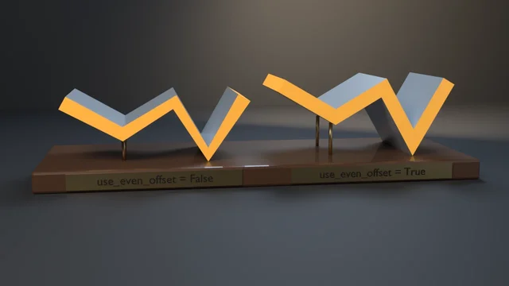

Lattice Deform
A 2x2x2 Lattice modifier set to KEY_LINEAR on all three axes, with two top control points moved through LatticePoint.co_deform, read back through the depsgraph (evaluated_get, to_mesh, to_mesh_clear).
examples/boolean-exact-volume/
The Boolean modifier on the EXACT solver: union, difference and intersection of a cube and a slab whose top face is coplanar with the cube's, read back through the depsgraph and measured by the divergence theorem.
Rendered headless by the example itself. Select it to enlarge.
blender --background --python examples/boolean-exact-volume/boolean_exact_volume.py --
A runnable example that cuts a 2 m cube with a 2 × 1 × 1 m slab using the Boolean modifier on the EXACT solver, in all three operations (UNION, DIFFERENCE, INTERSECT), then proves that each result has the closed-form volume and is a closed 2-manifold. The hard part is deliberate: the slab's top face lies in the cube's top plane, the coplanar case where floating-point booleans go wrong. The results are read through the depsgraph lifetime contract from depsgraph-and-evaluated-data (evaluated_get → to_mesh → to_mesh_clear), and the operands are built with bmesh and freed in try/finally as mesh-editing-and-bmesh requires.
What it witnesses: with A = [0,2]³ and B = [1,3] × [0.5,1.5] × [1,2], the overlap is A ∩ B = [1,2] × [0.5,1.5] × [1,2], so the closed forms are V(A ∪ B) = 8 + 2 − 1 = 9, V(A − B) = 8 − 1 = 7 and V(A ∩ B) = 1 cubic metre. Each operand pair sits in an object matrix that is translated and turned 18° about Z, so the modifier has to carry B into A's space. For every result the check:
The trap it exposes: the floating-point solver is faster and is right in general position, but it mishandles coplanar faces. --float-solver runs the same three operations on it and gets a union of 7.708 m³ against the closed form 9, so check 3 fails with the measured error. That solver was 'FAST' through 4.5 LTS and is 'FLOAT' from 5.0, so a script that hard-codes either name breaks on the other series (fast_solver_id() branches on bpy.app.version). 'EXACT' is the same identifier on 4.5, 5.1 and 5.2.
The still shows the three operations side by side on a walnut plinth, each named by a brass plaque in front of it. On the left, the union in teal glaze, with the slab's free end grown out of the cube. In the middle, the difference in machined bronze, with the notch cut down through the top face and the removed slab drawn as frosted amber glass. On the right, the intersection: the 1 m³ overlap cube in orange glaze, inside frosted ghosts of both operands. Thin rods trace the operands' edges (steel for the cube, amber for the coplanar slab).
Everything shown is render-only and is built after the check has run. The results on display are frozen copies of the checked meshes with a 12 mm chamfer; the measured modifier objects and the cutter objects never render. The ghosts are grown 2 mm and 4 mm so none of their faces is coplanar with a result or with each other.
# Cheap correctness check (no render) — the CI check:
blender --background --python boolean_exact_volume.py --
# Falsifier: the floating-point solver (FLOAT / FAST) on the coplanar case. Must exit 3.
blender --background --python boolean_exact_volume.py -- --float-solver
# Also render a still (EEVEE on a GPU host; use --engine cycles on GPU-less hosts):
blender --background --python boolean_exact_volume.py -- --output boolean.png --engine cyclesBooleanModifier.solver lists 'FAST', 'EXACT', 'MANIFOLD' on 4.5 LTS and 'FLOAT', 'EXACT', 'MANIFOLD' on 5.1 and 5.2 LTS: the floating-point solver was renamed in 5.0. Measured identically on 4.5.11, 5.1.2 and 5.2.1: EXACT union 8.999999 (12 faces), difference 6.999999 (10 faces), intersection 1.000000 (6 faces), all closed 2-manifolds; --float-solver union 7.708379.
| Code | Meaning |
|---|---|
| 0 | Success |
| 1 | Uncaught exception (FATAL wrapper) |
| 2 | argparse / usage |
| 3 | A result's volume is off its closed form (--float-solver lands here) |
| 4 | A result is not a closed 2-manifold (an edge without exactly two faces, or loose geometry) |
| 5 | A result's volume is within 0.5 m³ of operand A's (the witness would pass vacuously) |
| 6 | --output produced no file |
| 10 | --output framing violation (Layer 1 fill / margin gate, gallery_framing) |
The blender-smoke workflow runs the check on Blender 5.2 LTS and 4.5 LTS (5.1 on the weekly cron, the needs-5.1 PR label, or manual dispatch). Smoke does not pass --output or --float-solver.
"""EXACT Boolean volumes are closed-form and manifold, even on coplanar faces — a runnable example. Witnesses the Boolean modifier contract with ``solver = 'EXACT'``. Operand A is a 2 m cube and operand B a 2 x 1 x 1 m slab that overlaps A by a 1 m cube and whose top face lies in A's top plane: the coplanar case. Both operands sit in object matrices that are translated and turned about Z, so the modifier has to bring B into A's space. For each of UNION, DIFFERENCE and INTERSECT the evaluated mesh (``evaluated_get`` + ``to_mesh`` / ``to_mesh_clear``) is measured in world space: - 3: its signed volume, by the divergence theorem over its own triangles, matches the closed form (V(A) + V(B) - V(A n B) = 9, V(A) - V(A n B) = 7, V(A n B) = 1 cubic metres) to 1e-6 relative; positive volume also means the normals point outward; - 4: it is a closed 2-manifold: every edge borders exactly two faces, and there are no loose verts or edges; - 5: it is not vacuous: each result's volume differs from V(A) by at least 0.5 m^3, so the modifier really acted. ``--float-solver`` runs the same three operations on the floating-point solver (``'FLOAT'`` on Blender 5.x, ``'FAST'`` on 4.5 LTS, the same solver under its older name). On the coplanar top face it returns a wrong union (7.708 m^3 against 9, measured identically on 4.5.11, 5.1.2 and 5.2.1), so check 3 fails with the measured error. That is the falsifier, and the documented failure case the EXACT solver exists to handle. By default it runs only the correctness check (no render) — the CI smoke check. Pass --output to also render a still: blender --background --python boolean_exact_volume.py -- # check only blender --background --python boolean_exact_volume.py -- --float-solver # must fail blender --background --python boolean_exact_volume.py -- --output b.png # + render """ import bpy, bmesh, sys, os, math, argparse from mathutils import Vector, Matrix # Shared Layer 1 framing measurement (render path only) — see gallery_framing.py sys.path.insert(0, os.path.join(os.path.dirname(os.path.abspath(__file__)), os.pardir)) sys.dont_write_bytecode = True # keep examples/__pycache__ out of the repo tree import gallery_framing # Operands in their shared local frame (metres). B's top face (z = 2) is # coplanar with A's top face; the overlap A n B is [1,2] x [0.5,1.5] x [1,2]. A_LO, A_HI = (0.0, 0.0, 0.0), (2.0, 2.0, 2.0) B_LO, B_HI = (1.0, 0.5, 1.0), (3.0, 1.5, 2.0) OPS = ('UNION', 'DIFFERENCE', 'INTERSECT') SPACING = 4.6 # world X between the three operation sets TURN = math.radians(-18.0) # every set's frame turns about Z def box_volume(lo, hi): return (hi[0] - lo[0]) * (hi[1] - lo[1]) * (hi[2] - lo[2]) def overlap(lo1, hi1, lo2, hi2): lo = tuple(max(lo1[k], lo2[k]) for k in range(3)) hi = tuple(min(hi1[k], hi2[k]) for k in range(3)) return lo, hi V_A = box_volume(A_LO, A_HI) V_B = box_volume(B_LO, B_HI) V_AB = box_volume(*overlap(A_LO, A_HI, B_LO, B_HI)) EXPECTED = {'UNION': V_A + V_B - V_AB, 'DIFFERENCE': V_A - V_AB, 'INTERSECT': V_AB} REL_TOL = 1e-6 MIN_CHANGE = 0.5 # m^3; check 5's floor against V(A) def fast_solver_id(): """The floating-point solver: 'FAST' through 4.5 LTS, renamed 'FLOAT' in 5.0.""" return 'FLOAT' if bpy.app.version >= (5, 0, 0) else 'FAST' def box_mesh(name, lo, hi): me = bpy.data.meshes.new(name) bm = bmesh.new() try: res = bmesh.ops.create_cube(bm, size=1.0) for vert in res["verts"]: vert.co = Vector(tuple(lo[k] + (vert.co[k] + 0.5) * (hi[k] - lo[k]) for k in range(3))) bm.to_mesh(me) finally: bm.free() return me def frame(i): """World matrix of operation set i: translated along X, turned about Z, with the operands' local frame centred on A's footprint.""" centre = Matrix.Translation((-(A_HI[0] - A_LO[0]) / 2 - 0.5, -(A_HI[1] - A_LO[1]) / 2, 0.0)) return (Matrix.Translation(((i - 1) * SPACING, 0.0, 0.0)) @ Matrix.Rotation(TURN, 4, 'Z') @ centre) def build_scene(float_solver=False): bpy.ops.wm.read_factory_settings(use_empty=True) scene = bpy.context.scene solver = fast_solver_id() if float_solver else 'EXACT' results = {} cutters = {} for i, op in enumerate(OPS): a = bpy.data.objects.new(f"{op.title()}Result", box_mesh(f"{op.title()}Result", A_LO, A_HI)) b = bpy.data.objects.new(f"{op.title()}Cutter", box_mesh(f"{op.title()}Cutter", B_LO, B_HI)) a.matrix_world = frame(i) b.matrix_world = frame(i) b.hide_render = True b.display_type = 'WIRE' scene.collection.objects.link(a) scene.collection.objects.link(b) mod = a.modifiers.new("Boolean", 'BOOLEAN') mod.operation = op mod.solver = solver mod.object = b results[op] = a cutters[op] = b return results, cutters, solver def measure(obj): """World-space signed volume (divergence theorem over fan triangles of each polygon) plus manifold counts, from the evaluated mesh.""" deps = bpy.context.evaluated_depsgraph_get() ev = obj.evaluated_get(deps) me = ev.to_mesh() try: mw = ev.matrix_world co = [mw @ v.co for v in me.vertices] vol = 0.0 for p in me.polygons: idx = list(p.vertices) v0 = co[idx[0]] for j in range(1, len(idx) - 1): vol += v0.dot(co[idx[j]].cross(co[idx[j + 1]])) / 6.0 bm = bmesh.new() try: bm.from_mesh(me) bad_edges = sum(1 for e in bm.edges if len(e.link_faces) != 2) loose_verts = sum(1 for v in bm.verts if not v.link_faces) loose_edges = sum(1 for e in bm.edges if not e.link_faces) finally: bm.free() return vol, bad_edges, loose_verts, loose_edges, len(me.polygons) finally: ev.to_mesh_clear() def check(results, solver): bpy.context.view_layer.update() m = {op: measure(results[op]) for op in OPS} # 3: volumes on the closed forms (positive => outward normals) for op in OPS: vol, exp = m[op][0], EXPECTED[op] if abs(vol - exp) > REL_TOL * exp: print(f"ERROR: {op} on solver {solver!r}: volume {vol:.6f} m^3, closed form " f"{exp:.6f} (error {vol - exp:+.6f})", file=sys.stderr) return 3 # 4: closed 2-manifold, no loose geometry for op in OPS: _, bad, lv, le, _ = m[op] if bad or lv or le: print(f"ERROR: {op} on solver {solver!r} is not a closed manifold: {bad} edges " f"without exactly two faces, {lv} loose verts, {le} loose edges", file=sys.stderr) return 4 # 5: every result really differs from operand A for op in OPS: if abs(m[op][0] - V_A) < MIN_CHANGE: print(f"ERROR: {op} volume {m[op][0]:.4f} within {MIN_CHANGE} of V(A) = {V_A}", file=sys.stderr) return 5 parts = ", ".join(f"{op} {m[op][0]:.6f} (closed form {EXPECTED[op]:g}, {m[op][4]} faces)" for op in OPS) print(f"solver {solver!r}, coplanar top face: {parts}; all closed 2-manifold, " f"0 loose verts/edges") return 0 def eevee_engine_id(): return 'BLENDER_EEVEE' if bpy.app.version >= (5, 0, 0) else 'BLENDER_EEVEE_NEXT' # --------------------------------------------------------------------------- # Render staging only (runs after the check; never part of it) # --------------------------------------------------------------------------- def principled(name, base, rough, metal=0.0, coat=0.0, coat_rough=0.1, rough_var=0.0): """A designed Principled material. *rough_var* adds a low-frequency roughness drift (no fine noise: on metal that reads as glitter).""" mat = bpy.data.materials.new(name) mat.use_nodes = True nt = mat.node_tree b = nt.nodes["Principled BSDF"] b.inputs["Base Color"].default_value = (*base, 1.0) b.inputs["Roughness"].default_value = rough b.inputs["Metallic"].default_value = metal if coat: b.inputs["Coat Weight"].default_value = coat b.inputs["Coat Roughness"].default_value = coat_rough if rough_var: tex = nt.nodes.new("ShaderNodeTexNoise") tex.inputs["Scale"].default_value = 3.0 tex.inputs["Detail"].default_value = 2.0 mr = nt.nodes.new("ShaderNodeMapRange") mr.inputs["To Min"].default_value = max(rough - rough_var, 0.0) mr.inputs["To Max"].default_value = rough + rough_var nt.links.new(tex.outputs["Fac"], mr.inputs["Value"]) nt.links.new(mr.outputs["Result"], b.inputs["Roughness"]) return mat def ghost_glass(name, tint): """Frosted, faintly tinted glass for an operand volume the result lost.""" mat = bpy.data.materials.new(name) mat.use_nodes = True b = mat.node_tree.nodes["Principled BSDF"] b.inputs["Base Color"].default_value = (*tint, 1.0) b.inputs["Roughness"].default_value = 0.22 b.inputs["IOR"].default_value = 1.45 b.inputs["Transmission Weight"].default_value = 1.0 return mat def walnut_material(): """Walnut with grain running along the plinth (world X): distorted wave bands mixed between two walnut tones, a soft blotch layer, a light bump, and a satin coat that does not mirror the scene.""" mat = bpy.data.materials.new("Walnut") mat.use_nodes = True nt = mat.node_tree b = nt.nodes["Principled BSDF"] coord = nt.nodes.new("ShaderNodeTexCoord") mapn = nt.nodes.new("ShaderNodeMapping") mapn.inputs["Scale"].default_value = (0.35, 2.4, 1.0) nt.links.new(coord.outputs["Object"], mapn.inputs["Vector"]) wave = nt.nodes.new("ShaderNodeTexWave") wave.wave_type = 'BANDS' wave.bands_direction = 'Y' wave.inputs["Scale"].default_value = 2.2 wave.inputs["Distortion"].default_value = 7.0 wave.inputs["Detail"].default_value = 3.0 wave.inputs["Detail Scale"].default_value = 1.4 nt.links.new(mapn.outputs["Vector"], wave.inputs["Vector"]) ramp = nt.nodes.new("ShaderNodeValToRGB") ramp.color_ramp.elements[0].position = 0.25 ramp.color_ramp.elements[0].color = (0.085, 0.040, 0.020, 1.0) ramp.color_ramp.elements[1].position = 0.85 ramp.color_ramp.elements[1].color = (0.19, 0.095, 0.045, 1.0) nt.links.new(wave.outputs["Fac"], ramp.inputs["Fac"]) blot = nt.nodes.new("ShaderNodeTexNoise") blot.inputs["Scale"].default_value = 1.6 blot.inputs["Detail"].default_value = 3.0 nt.links.new(coord.outputs["Object"], blot.inputs["Vector"]) mix = nt.nodes.new("ShaderNodeMix") mix.data_type = 'RGBA' mix.blend_type = 'MULTIPLY' mix.inputs["Factor"].default_value = 0.35 nt.links.new(ramp.outputs["Color"], mix.inputs["A"]) nt.links.new(blot.outputs["Color"], mix.inputs["B"]) nt.links.new(mix.outputs["Result"], b.inputs["Base Color"]) bump = nt.nodes.new("ShaderNodeBump") bump.inputs["Strength"].default_value = 0.04 nt.links.new(wave.outputs["Fac"], bump.inputs["Height"]) nt.links.new(bump.outputs["Normal"], b.inputs["Normal"]) b.inputs["Roughness"].default_value = 0.48 b.inputs["Coat Weight"].default_value = 0.2 b.inputs["Coat Roughness"].default_value = 0.32 return mat def tube_mesh(name, segments, radius, sides=10): """Render-only rods along line segments (the operand outlines).""" me = bpy.data.meshes.new(name) bm = bmesh.new() try: for a, b in segments: axis = b - a res = bmesh.ops.create_cone(bm, cap_ends=True, segments=sides, radius1=radius, radius2=radius, depth=axis.length) rot = Vector((0, 0, 1)).rotation_difference(axis.normalized()).to_matrix() mid = (a + b) / 2 for vert in res["verts"]: vert.co = rot @ vert.co + mid bmesh.ops.recalc_face_normals(bm, faces=bm.faces) bm.to_mesh(me) finally: bm.free() for p in me.polygons: p.use_smooth = True return me def box_edges(lo, hi, mw): c = {(i, j, k): mw @ Vector((hi[0] if i else lo[0], hi[1] if j else lo[1], hi[2] if k else lo[2])) for i in (0, 1) for j in (0, 1) for k in (0, 1)} edges = [] for i in (0, 1): for j in (0, 1): edges.append((c[(i, j, 0)], c[(i, j, 1)])) edges.append((c[(i, 0, j)], c[(i, 1, j)])) edges.append((c[(0, i, j)], c[(1, i, j)])) return edges def grown(lo, hi, pad): return tuple(v - pad for v in lo), tuple(v + pad for v in hi) # Which operand volumes each result no longer contains: those are drawn as # frosted ghosts so the eye can see what the solver removed. GHOSTS = {'UNION': (), 'DIFFERENCE': ('B',), 'INTERSECT': ('A', 'B')} # Outline rods: B everywhere (the coplanar cutter); A only where A is a ghost. OUTLINES = {'UNION': ('B',), 'DIFFERENCE': ('B',), 'INTERSECT': ('A', 'B')} LABELS = {'UNION': "UNION", 'DIFFERENCE': "DIFFERENCE", 'INTERSECT': "INTERSECT"} def render_still(results, cutters, path, engine): scene = bpy.context.scene finishes = { # glazed ceramic, machined bronze, glazed ceramic: three readable hues 'UNION': principled("UnionGlaze", (0.05, 0.29, 0.32), 0.32, coat=0.6, coat_rough=0.08, rough_var=0.06), 'DIFFERENCE': principled("DifferenceBronze", (0.78, 0.52, 0.27), 0.30, metal=1.0, rough_var=0.07), 'INTERSECT': principled("IntersectGlaze", (0.90, 0.31, 0.05), 0.32, coat=0.6, coat_rough=0.08, rough_var=0.06), } steel = principled("OperandASteel", (0.70, 0.72, 0.75), 0.24, metal=1.0) amber = principled("OperandBAmber", (0.95, 0.47, 0.10), 0.30, metal=0.6) ghost = {'A': ghost_glass("GhostA", (0.86, 0.90, 0.95)), 'B': ghost_glass("GhostB", (1.0, 0.80, 0.55))} brass = principled("PlaqueBrass", (0.84, 0.62, 0.32), 0.40, metal=1.0, rough_var=0.05) ink = principled("PlaqueInk", (0.012, 0.010, 0.008), 0.6) walnut = walnut_material() parts = [] def add(name, me, mat, mw=None): me.materials.append(mat) ob = bpy.data.objects.new(name, me) if mw is not None: ob.matrix_world = mw scene.collection.objects.link(ob) parts.append(ob) return ob # Display copies: the checked results, frozen, with a 12 mm machined # chamfer. The modifier objects themselves (already measured) are hidden # from the render, so the chamfer never touches the volume check. deps = bpy.context.evaluated_depsgraph_get() for i, op in enumerate(OPS): res = results[op] shown = bpy.data.meshes.new_from_object(res.evaluated_get(deps)) # the boolean output carries the operands' (empty) material slots; # start clean so every face takes the finish below shown.materials.clear() for poly in shown.polygons: poly.material_index = 0 ob = add(f"{op.title()}Shown", shown, finishes[op], res.matrix_world.copy()) bev = ob.modifiers.new("MachinedChamfer", 'BEVEL') bev.width = 0.012 bev.segments = 3 bev.limit_method = 'ANGLE' bev.harden_normals = True res.hide_render = True mw = frame(i) boxes = {'A': (A_LO, A_HI), 'B': (B_LO, B_HI)} for key in GHOSTS[op]: # grown 2 / 4 mm so no ghost face is coplanar with the result or # with the other ghost (their top faces share z = 2) lo, hi = grown(*boxes[key], 0.002 if key == 'A' else 0.004) add(f"{op.title()}Ghost{key}", box_mesh(f"{op.title()}Ghost{key}", lo, hi), ghost[key], mw) for key in OUTLINES[op]: lo, hi = grown(*boxes[key], 0.006 if key == 'A' else 0.010) add(f"{op.title()}Outline{key}", tube_mesh(f"{op.title()}Outline{key}", box_edges(lo, hi, mw), 0.009 if key == 'A' else 0.011), steel if key == 'A' else amber) half_x, half_y, top, depth = SPACING + 2.0, 2.75, -0.004, 0.22 plinth = add("Plinth", box_mesh("Plinth", (-half_x, -half_y, top - depth), (half_x, half_y, top)), walnut) bev = plinth.modifiers.new("Chamfer", 'BEVEL') bev.width = 0.035 bev.segments = 3 # Brass name plaques lying on the plinth in front of each set, tilted # back 32 degrees so they face the camera; raised dark lettering. tilt = math.radians(32.0) plate_w, plate_d, plate_t = 2.1, 0.46, 0.028 for i, op in enumerate(OPS): base = Matrix.Translation(((i - 1) * SPACING, -half_y + 0.16, top)) \ @ Matrix.Rotation(tilt, 4, 'X') plate = add(f"{op.title()}Plaque", box_mesh(f"{op.title()}Plaque", (-plate_w / 2, 0.0, 0.0), (plate_w / 2, plate_d, plate_t)), brass, base) pb = plate.modifiers.new("Chamfer", 'BEVEL') pb.width = 0.006 pb.segments = 2 cu = bpy.data.curves.new(f"{op.title()}Label", 'FONT') cu.body = LABELS[op] cu.size = 0.25 cu.space_character = 1.12 cu.extrude = 0.005 cu.align_x = 'CENTER' cu.align_y = 'CENTER' cu.materials.append(ink) txt = bpy.data.objects.new(f"{op.title()}Label", cu) txt.matrix_world = base @ Matrix.Translation((0.0, plate_d / 2, plate_t + 0.0055)) scene.collection.objects.link(txt) parts.append(txt) floor_me = bpy.data.meshes.new("Floor") bm = bmesh.new() try: bmesh.ops.create_grid(bm, x_segments=1, y_segments=1, size=30.0) bm.to_mesh(floor_me) finally: bm.free() fmat = bpy.data.materials.new("Studio") fmat.use_nodes = True fb = fmat.node_tree.nodes["Principled BSDF"] fb.inputs["Base Color"].default_value = (0.03, 0.032, 0.037, 1.0) fb.inputs["Roughness"].default_value = 0.7 floor_me.materials.append(fmat) floor = bpy.data.objects.new("Floor", floor_me) floor.location = (0.0, 0.0, top - depth) scene.collection.objects.link(floor) wall = bpy.data.objects.new("Wall", floor_me.copy()) wall.location = (0.0, 8.0, 0.0) wall.rotation_euler = (math.radians(90), 0.0, 0.0) scene.collection.objects.link(wall) world = bpy.data.worlds.new("World") world.use_nodes = True world.node_tree.nodes["Background"].inputs["Color"].default_value = (0.02, 0.021, 0.025, 1.0) scene.world = world centre = Vector((0.0, -0.4, 0.9)) def light(name, loc, energy, size, col, aim): ld = bpy.data.lights.new(name, 'AREA') ld.energy = energy; ld.size = size; ld.color = col ob = bpy.data.objects.new(name, ld) ob.location = loc ob.rotation_euler = (Vector(aim) - Vector(loc)).to_track_quat('-Z', 'Y').to_euler() scene.collection.objects.link(ob) light("Key", (-5.0, -6.5, 7.5), 760.0, 5.0, (1.0, 0.96, 0.9), centre) light("Fill", (7.0, -5.5, 3.0), 260.0, 8.0, (0.75, 0.85, 1.0), centre) light("Rim", (2.0, 5.0, 7.0), 420.0, 4.0, (0.6, 0.78, 1.0), centre) light("Wedge", (3.0, 5.0, 3.0), 480.0, 6.0, (1.0, 0.76, 0.5), (5.0, 8.0, 1.0)) # low softbox in front so the tilted brass plaques read (they mirror the # dark studio otherwise) light("PlaqueSoft", (1.0, -10.0, 3.2), 260.0, 12.0, (1.0, 0.97, 0.92), (0.0, -2.4, 0.0)) cam_data = bpy.data.cameras.new("Cam") cam_data.lens = 50.0 cam = bpy.data.objects.new("Cam", cam_data) cam.location = (3.0, -21.3, 10.8) scene.collection.objects.link(cam) aim = bpy.data.objects.new("Aim", None) aim.location = centre scene.collection.objects.link(aim) tr = cam.constraints.new('TRACK_TO') tr.target = aim tr.track_axis = 'TRACK_NEGATIVE_Z' tr.up_axis = 'UP_Y' scene.camera = cam scene.render.engine = 'CYCLES' if engine == 'cycles' else eevee_engine_id() if engine == 'cycles': scene.cycles.samples = 64 scene.cycles.transmission_bounces = 8 else: try: scene.eevee.taa_render_samples = 64 except AttributeError: pass scene.render.resolution_x = 1280 scene.render.resolution_y = 720 scene.render.image_settings.file_format = 'PNG' scene.render.filepath = path # AgX would wash the glazes and the amber cutter toward pastel (docs/VISUAL-STYLE.md) scene.view_settings.view_transform = 'Standard' bpy.context.view_layer.update() # Layer 1 framing gate (silhouette matte) — exit 10 on violation, before # the beauty render so a defective composition ships no artifact fcode = gallery_framing.check_framing( scene, cam, hero=parts, elements=parts, stage=[floor, wall], ) if fcode: return fcode bpy.ops.render.render(write_still=True) if not (os.path.exists(path) and os.path.getsize(path) > 0): print("ERROR: render produced no file", file=sys.stderr) return 6 return 0 def main(): argv = sys.argv[sys.argv.index("--") + 1:] if "--" in sys.argv else [] p = argparse.ArgumentParser() p.add_argument("--output", default=None, help="optional: render a still PNG here") p.add_argument("--engine", default="eevee", choices=("eevee", "cycles"), help="render engine for --output (cycles for GPU-less hosts)") p.add_argument("--float-solver", action="store_true", help="use the floating-point solver (FLOAT / FAST) on the coplanar case (must fail)") args = p.parse_args(argv) results, cutters, solver = build_scene(float_solver=args.float_solver) code = check(results, solver) if code: return code if args.output: rcode = render_still(results, cutters, os.path.abspath(args.output), args.engine) if rcode: return rcode print(f"rendered still {args.output}") print("boolean-exact-volume OK") return 0 if __name__ == "__main__": try: sys.exit(main()) except Exception as e: import traceback; traceback.print_exc(); print(f"FATAL: {e}", file=sys.stderr); sys.exit(1)
A 2x2x2 Lattice modifier set to KEY_LINEAR on all three axes, with two top control points moved through LatticePoint.co_deform, read back through the depsgraph (evaluated_get, to_mesh, to_mesh_clear).

Solidify's use_even_offset on a folded strip: off, each fold vertex moves t along the bisector of its face normals and the shell thins to t*cos(phi/2); on, it moves t/cos(phi/2) and stays exactly t thick at 60, 90 and 120 degree folds.

A retro rocket at LOD0/1/2 via the Decimate modifier evaluated through the depsgraph, with a wireframe of each evaluated mesh. The check proves the reduction is non-destructive, the triangle count hits ratio x base within bounds, and silhouette-critical dimensions survive.